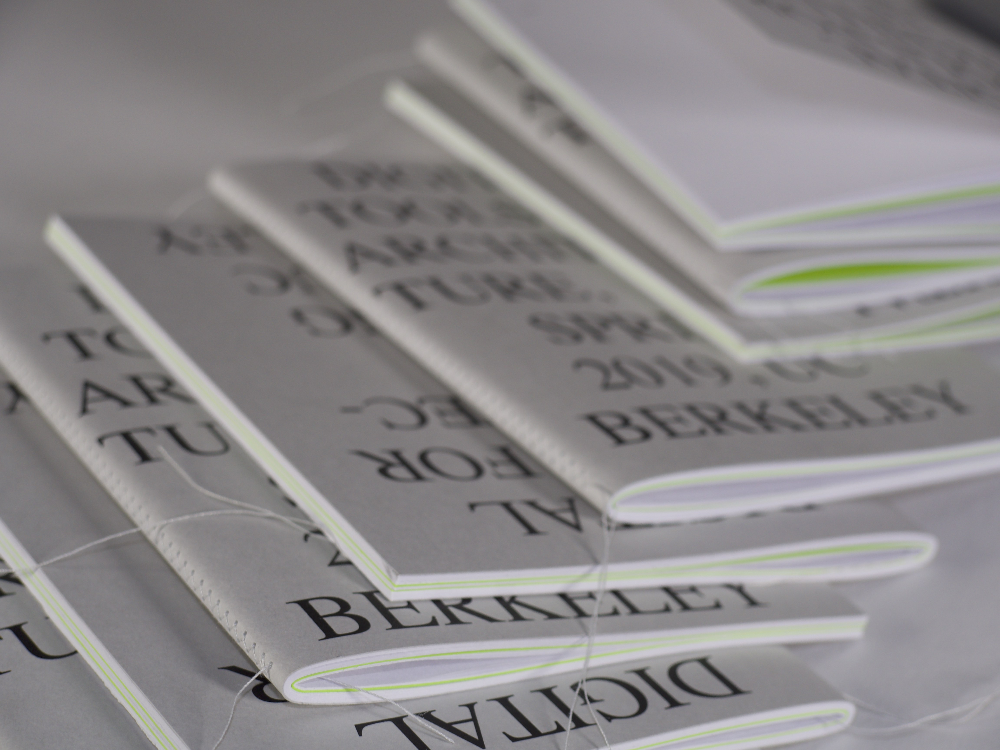
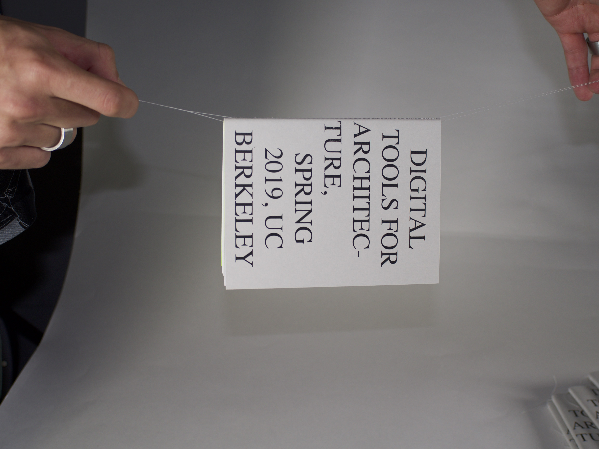
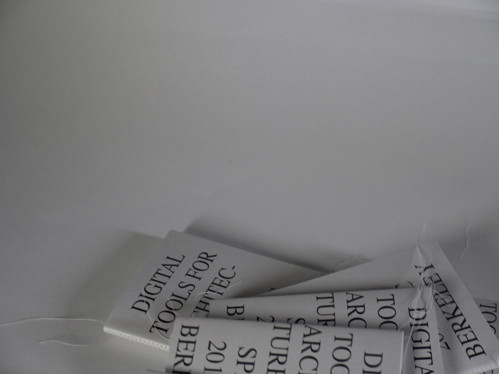
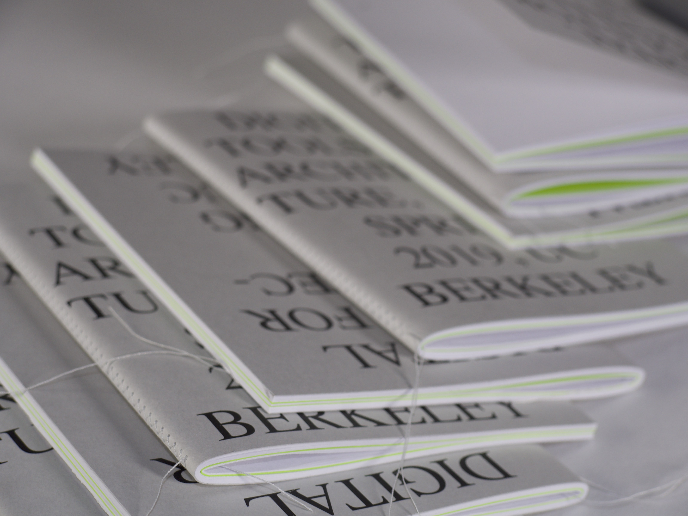
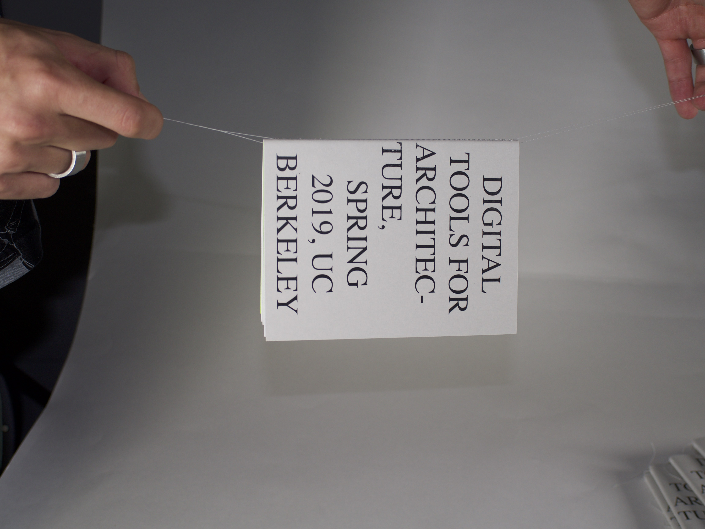
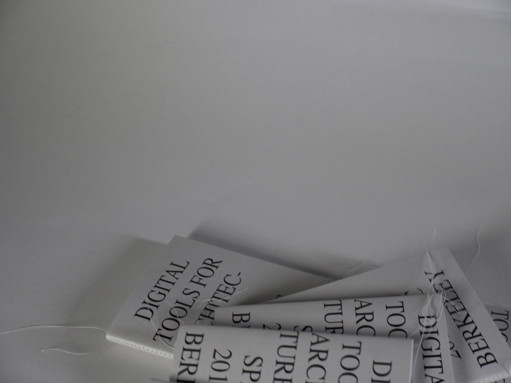

In the spring of 2019, I co-instructed an introductory architecture course
with one of my best friends. It was called Arch 98: Digital Tools for
Architecture. We had taken a similar course in our freshman year and actually,
that was how we met. During that time we got close with the instructors
and they said how’d they wish it would keep going. A year and a half later
we decided to offer our own version of it. We changed the syllabus and
material quite a bit, focusing on software and concepts we thought were
the most important to get a good foundation in as an undergraduate architecture
major. The course ended up going well and we were really pleased with the
work our students produced over the semester.
The following semester, both with a little to much time on our hands and
having come back from design jobs over the summer, we wanted to work together
on something. We went to a lecture by Irma Boom, known as The Queen of Books.
We left that lecture very inspired and decided to make a small anthology
of our students’ final projects. Having no prompt it was an original piece for both of us.
These are some images of what we made.


 




